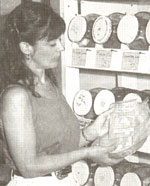
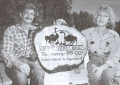
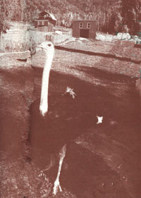
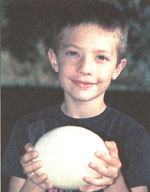

SHUSWAP DIARY
Through much trial and error, Deanna Kawatski managed to tackle a small health crisis at home.
What poison ivy, publicity, and ostriches have in common is anyone's guess, but in the past few months, they all con verged on my path. I should have known better ....
At the prickly age of fourteen, my twin sister Donna and I had tangled with poison ivy at a Shuswap beach party. We returned to school proudly wearing panty hose for the first time. But the glittering coach of privilege soon turned into a pumpkin. Our rashes were thriving and spreading until the nylons were more akin to a torturer's device. The itch was so fierce that we scratched our legs until they bled.
Thirty years later, elated by what would amount to a sixteen-mile back road bike trip with Ben and my friend Eric, caution scattered like the pebbles launched by our whizzing tires. As poplar leaves spun in the breeze, I wandered in a glade in the remote reaches of Meadow Creek. Unwittingly, and with a stroke of luck, only my right arm was zapped.
Eight days later, despite the use of calamine lotion, baking soda, and other suggested remedies, my arm had swollen to nearly twice its size. Aggravating the condition was my apprehension about the publicity tour of Vancouver looming on the near horizon. The purpose was to promote Wilderness Mother, my book about raising children in the bush. Whitecap Books had produced a Deanna Kawatski Canadian edition and organized the tour. First I was to do a reading and signing at Elaine's Books in Salmon Arm. In horror I watched what was scheduled to be an autographing arm mutate into a monster. Would it make people run? Without question, I would wear sleeves.
At a clinic in Chase I was told that mine was the fourth case of poison ivy the doctor had recently treated. The physician made no move to touch me and instead told a nurse to bring a basin. I was then instructed to wash off the slathering of zinc oxide while the doctor watched from the opposite side of the room.
The next step, naturally, was the drugstore, where reluctantly I bought forty dollars worth of prescribed antibiotics, antiseptic, gauze, and Band-Aids. It was against my better judgment to take the cloxacillin. I also understood the doctor's aim to head the infection off at the pass even if, in the process, it knocked my own immune system back. I waited several days for the antibiotics to kick in and heal my rash from the inside while my arm continued to throb. I felt like a leper and preferred a cave rather than the spotlight.
OSTRICH RANCHING IN BRITISH COLUMBIA?Among other advantages, ostriches take only onesixth the area that cattle ranching requires.
Nothing stimulates an interest in medicine more than an ailment. In early June, I attended-along with twenty other people-a community health meeting. The star of the gathering was an herbal drink called Can-Aid with a reputably amazing ability to heal. It contained burdock root, Turkish rhubarb, slippery elm, and sheep sorrel. This non toxic formula, originally called Essiac, has been used to treat cancer since 1922. Three people in attendance, including a young woman who had been declared clean of cancer, vouched for its effectiveness. The Can-Aid company had sent a representative to speak. Elizabeth, in white pants, navy blazer, and with the lusty spirit of her native Glasgow, stressed the caution with which Can-Aid advertises its product. But so far, the medical establishment hasn't suppressed testimonials and when people with deadly diseases find a means of relief, they are bound to spread the word.
What was significant about the meeting was that it was a group of predominantly older and ailing members of the community getting together to voice their dissatisfaction with some of the modern medical practices. This was coupled with a desire to seek out healthy alternatives to prescription drugs. More significantly, the meeting reminded us to take responsibility for our own health. Later, Elizabeth assured me that Can- Aid would help my arm and my mother and I split the cost of a bottle. It was no quick cure and to escape my affliction, I biked up Crowfoot Mountain to visit my sister-in-law, Kerry. A diminutive, darkeyed dynamo, she was in her garden wearing a swank strawhat, bandanna, and welcoming grin. As well as a homesteader, Kerry is a performer and environmental activist. Invariably we have a passionate discussion. Kerry winced at the sight of my arm. When she offered to make me a poultice of conifrey leaves (from her garden) and goldenseal, I agreed. I felt genuine relief from the layers of wet leaves. Thanking her, I stuffed spare conifrey in my pack and began to pedal back down the cantankerous mountain road.
The body has its own wisdom, I remembered later as I laid on the naturopath's couch clutching a vial of nettles. The gentle doctor with the trace of an accent didn't conceal his disgust when I told him I had been prescribed antibiotics. He noted that for every poisonous plant there is an antidote growing close by. In this case it was horsetails. However, my infection had gone far beyond a simple poison ivy rash. What I had was an allergic reaction. The naturopath's approach to illness was holistic. He treated the whole body rather than the condition. Beginning with muscle testing, I laid prone and resisted while he pressed my arms downwards. Then pressing various physical centers, he explained that he was stimulating my own immune system to fight the infection. He also had me touch the rash. Prescribing a goldenseal wash followed by a cream of calendula, conifrey root, and coneflower, the doctor warned me that if the infection got into my blood I would have to be hospi talized. I left the office uncertain whether I had been subjected to voodoo or a sophisticated system of healing.
The robust manager of the Golden Pantry health food store had additional advice. He suggested that I mix the goldenseal half and half with myrrh and with cold-pressed olive oil to make it into a salve. His claim was that the goldenseal would heal the surface, but that the myrrh was needed to penetrate the epidermis and draw the bacteria out. He also noted how antibiotics kill all of the bacteria in the body, including the good bacteria, leaving the system defenseless. When I revealed to him my own belief that my body remembered the initial encounter with poison ivy and now was overreacting, the merchant agreed. With significance he added, "Every cell has a memory."
I applied the salve that night and the next morning I saw amazing improvement. The swelling had subsided and the old layers of skin were actually sloughing off. From then on it healed with remarkable speed.
Even so, I wore long green sleeves when I read at Elaine's Books that Thursday. Despite the anxiety, which had made me into sausage the preceding week, the actual gathering-consisting largely of friends from the North Shuswap communitywas low key. And to my delight I discovered that I enjoyed sharing passages from my book aloud-words born and shaped in the solitude of the Coast Mountain forest. Having read stories aloud to my children for so many years, I was comfortable with my own voice.
The reading launched me on my small publicity tour. Whitecap Books had reserved a room for me at the glittering Waterfront Centre Hotel in Vancouver. Affluent-looking tourists and porters with sky-high piles of luggage glided across the floors, in front of columns and mirrors, beneath a glass ceiling that hovered somewhere in the outer galaxies. I felt my country roughness grate against the slickness of the city. I would rather have been sitting on a mountaintop breathing in the wind. No less than five uniformed receptionists waited behind a roped off counter. I had the misfortune of being summoned by what at first appeared to be a nine foot blonde Barbie with an attitude. Flipping with lethal fingernails through her file, she then asked to see my credit card. When I told her I didn't have credit cards, she opted for a twenty-dollar deposit for each night. When Whitecap got wind of this the next day, it resulted in a personal apology from the manager.
That evening after, the Canucks lost to the New York Rangers and 90,000 people rioted in downtown Vancouver. When the swell of sound rose to the nineteenth floor, I hopped out of bed and rushed to the window. The riot's epicenter was several blocks away. The next day I drove down Robson Street and the elaborate display of smashed windows spoke volumes about a spiritually bankrupt fragment of society. Desperate to believe in something, sports heroes were elevated to the status of gods. When their gods lost all hell broke loose.
I returned to Shuswap Lake with renewed gratitude for our home in the country. Meanwhile, the North Shuswap community was gearing up for another hectic summer. Events included the nineteenth annual Squilax Powwow, the eighth annual Shuswap Bluegrass Festival, and also the first ever Spaghetti Western. A group of local actors and musicians were pooling their talents, and along with an array of songs and skits, they planned to serve a spaghetti dinner complete with homemade sauces and desserts. Rumors of six thousand meatballs for each performance were rolling through the neighborhood.
I also got back in time to accompany Ben and his class on their final field trip of the year. I wasn't the only local bird to be enjoying publicity. Three males, named Banjo, Blueboy, and Bullet, and two females-Lady and Hope-were basking in the limelight at Oliver's ostrich farm, at the junction of Line 17 and Evans Road.
We were greeted by ostrich owner Sue Oliver. Sue grew up in Syracuse, New York, while her husband Bret was raised in Alberta. Ten-year-old Amanda was in Mrs. Stringer's class and her brother Logan was seven. Residents in the Shuswap community for less than one year, they had brought the birds with them. Prior to the move, they had lived in Revelstoke for eleven years. Sue had worked as production manager for the award-winning Revelstoke Times, a newspaper that she had also started. Bret, originally a bus driver, had been employed by the Revelstoke Dam until an auto accident left him partially disabled. Selling off part of the paper, the family bought an acreage in Sicamous and Sue commuted forty-five minutes to work in Revelstoke. But growing within her was the desire to spend more time on the farm. This longing became their move to Shuswap Lake.
Petite and slim, with debonair silver hair and sapphire eyes, Sue led us down a tiny fir-and cedar-hugged trail and across a footbridge traversing a creek to the pens.
REAL MOVERSThough flightless, the ostrich can accelerate to 30 mph in seconds.
Gazing over the fences at us were five of the world's largest birds. An average ostrich will stand seven to nine feet tall and weigh 300 to 350 pounds. Oliver's tallest topped eight feet. Half of their height was taken up by their rubberlike necks-stems that balanced the brilliance of large brown eyes framed by luxurious lashes, that bloomed with curiosity and never seemed to get their fill of looking. They are, in fact, capable of seeing seven miles. The only two-toed bird in the world, the children gasped with wonder when Sue told them that ostriches have strode the planet for the past fifty million years. We learned that if threatened, the ostrich, whose life span can be seventy or eighty years, does not bury its head in the sand as is popularly believed. Instead, it may strike out with its two clawed toes: a full grown male is capable of disemboweling a lion in the wild. Even so, as Sue explained, "If ostriches weren't farmed they would probably be extinct by now. About half the babies born in the wild are taken by other animals."
Although flightless, the ostrich is capable of taking twelve-foot strides and running at a speed of thirty miles per hour for fifteen minutes. In short bursts it may reach forty-three miles per hour, accelerating in a couple of seconds.
"I tend to like the females better;" Sue said, willing to admit her bias. "They're quieter and they'll just watch you pick up their eggs and walk away with them. I won't go in the pens with the males, especially during breeding season. They can cover ground rapidly, and just because they are on the other side of the pen doesn't mean they aren't going to be beside you pronto."
"Have you ever had any close calls?" I asked. Sue paused.
"One day I went in to clean the pen. I got three of the ostriches in the barn but let my favorite bird stay out with me. Because they were separated they were calling to each other the whole time. When I finally let them out they started running, twirling, and dancing toward me. I thought I was going to be hit and I tore over to the fence and started climbing it. They weren't being aggressive. They were simply having too much fun and weren't paying attention to where they were going."
The male ostrich builds the nest, fanning out a small depression in the dirt with his wings. More than one female will lay in the same nest, which the male guards fiercely. Ostriches lay the largest eggs in the world and, in awe, the class studied the melon-size ivory-colored egg. Its lacqueredlooking surface was pitted like the skin of an orange.
"A fertile ostrich egg is worth one to two thousand dollars," Sue informed us. She added, "The one male and two females we have are worth a total of about seventy thousand dollars because they're producing fertile eggs. The birds go up five hundred to six hundred dollars per month until they reach maturity." Ben was amazed to learn that baby ostriches are born about one foot tall, and that they grow one foot per month until they reach their adult height. The Olivers spend one dollar per day feeding each bird a diet of alfalfa pellets.
"But why ostriches?" I blurted out, still struck by how outlandish they looked removed from their African homeland.
"They're environmentally friendly," Bret piped up. Sue explained, "You can have this as a source of income on a small acreage. Ostriches take only one-sixth the area of land that cattle ranching requires, and they also reproduce fifty to one hundred times faster." To start out in the cattle business it takes twenty-five cows, one bull, and fiftytwo acres. In contrast, two pairs of yearlings and one acre of land is a start in ostrich raising. It is more expensive at first, but within forty months the returns can be as much as six times greater.
Still skeptical, I asked, "But what about the winters?" Sue readily responded, "They take the winters well. They can be raised in any climate that supports cattle and after the age of six months they adapt to cold as well as heat extremes:"
We also learned that ostriches were ultimately being raised for meat, leather, and feathers. An average-size fourteenmonth-old ostrich could provide ninety to one hundred and ten pounds of meat. Weightwise, the meat from one steer is equal to that from four to six ostriches.
Ostrich meat is delicious," Sue assured us, while the kids wrinkled their noses. "It is all red meat and tastes much like veal:" Ostrich meat is also lower in fat and cholesterol than beef, pork, chicken, or turkey. Later I saw recipes for deviled ostrich and ostrich and yogurt cream curry.
"But it's a breeder's market right now;" Sue noted. And it is a rapidly growing alternative agricultural business in Canada and the United States.
In this country, more than three thousand ranchers are raising the ostrich foundation stock needed to move into meat production. Sue added, "There were ten in the British Columbia Ostrich Association when we started. Now there are one hundred and fifty. For someone who wants to live on a small acreage, and if you've got something to invest, I would recommend ostrich raising. The whole family can be involved and there are so many different options. You could just raise adult birds and not even deal with the eggs. Or you could sell the eggs, do custom hatching, or just board the birds. Its very flexible:"
While Lady spread and vibrated her wings on the other side of the fence, Sue summed it up: "Our goal is to make a living on our farm:' And the Olivers are off to a good start. Eleven of fifteen eggs from Lady proved fertile, and they are in an incubator in Vernon.
Joining the rest of the class for a wiener roast, we heard the male ostriches emit a sound reminiscent of owls hooting in the distance. I chuckled at the bizarre birds, who were just as curious as the flocks of people who came to visit them.
I reckoned that, all in all, the ostriches and I had our fair share of publicity. And I could only hope that those dancing girls with the long naked legs, which vanished into the feathers of their tutus, would never tango with a toxic plant.
|
 |
 |
 |
|
 |
|
|